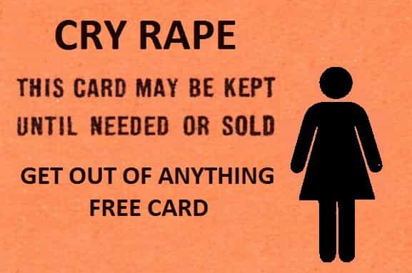

< < < Back
4 Things I Learned From Being Falsely Accused Of Rape On Campus – Return Of Kings
It was my first year at college, and I was starting to immerse myself in the PUA community. I saw a pretty redhead, let’s call her Kayla for the sake of anonymity, sitting in front of me in one of my classes. After a couple of weeks, I managed to get her number—she told me that she wanted to “study” with me for a big test we had coming up.
“I’m here,” she texted me. I eagerly got up and let her into my dorm room; she was squeezed into some tight booty shorts and a low cut top that would make any man look twice. “Let’s go to the study room, here,” I said. I walked her to our dorm’s designated study space.
“What do you want to go over?” I asked her. “Umm, I don’t know—you’re really smart, what do you think?” she asked.
“Well, I already get most of the material—but do you have anything in particular you’re confused about?”
“Uhh, no haha not really,” she said. It didn’t take me long to figure out that she had no intention of studying. It was pretty obvious that she just wanted me to pull her.
“Do you want to go back to my room and just hang out?” I asked, my 18-year-old voice quivering from nervousness. I guess she thought it was cute, because she eagerly consented. “Yeah, that sounds good!”
We got back to my dorm room, and within two minutes she was biting my lips so hard I thought I might bleed to death. “OH GOD, why didn’t I kiss you sooner?” she yelled out in between kisses. “You look just like Nick Jonas!” she exclaimed. What the fuck. I guess that’s good? I don’t know, but either way she was into me.
She ended up giving me head and we had completely consensual sex—she left gleefully and I never spoke to her again.
Months passed, and I had almost forgotten about the whole thing, until I got a call one day. “Is this Mr. Anthony?” a stern voice asked.
“Uhh, yeah. Who is this?”
“This is Investigator Jackson with the Department of Judiciary Action. Do you recall having sex with a girl by the name of Kayla?”
Chills went down my spine. “Oh my god,” I thought. “Am I being accused of rape?”
“Can you come in and talk some time today?” he spoke. “Uhh, yeah sure—I’ll be there in 20 minutes,” I told him. Holy fuck.
I got there as fast as I could, and asked him if I could record the questions he was asking me. “NO,” he barked. “You can not record our conversation.”
“What the fuck kind of crooked legal system is this?” I said to myself.
“Sir, I’m sorry but I’m going to talk to my lawyer. Please send me a list of your questions and I will draft some responses with him.” I got the fuck out of there, and $500 worth of legal fees later (which is a lot when you’re 19), it turns out she didn’t want to press charges. I wonder why.
I’m glad that this happened early on in my life. Every man needs to understand what women are capable of, and I hope that you can all learn from my story. Here’s what I learned from my experience with campus police.
1. The Odds Are Stacked Against You

From the moment that Investigator Jackson called me, I could tell that I was guilty until proven innocent. My suspicion was only confirmed upon walking into the “Sexual Assault” office, or whatever the hell they called it.
I was greeted by a fat, feminist-looking secretary who gave me a scowl. She knew what I was there for. “Hi, you can take a seat,” she spat with an overt tone of hatred. “Sure, is here okay?” I asked. She didn’t respond.
I was sure to be as nice as humanly possible, but it didn’t matter—they had their minds made up about me from the start. And who knows how deep the problem really was? Maybe the person who appointed them was a die-hard feminist, and maybe the very president of my university was, too.
Regardless, they treated me like I was a criminal. Rather than asking me what my side of the story was, out of genuine concern, they simply asked me a bunch of loaded questions. “Did you bite and spit on Miss Kayla?” “Did you force Miss Kayla to have sexual intercourse with you?” “Did you verbally abuse Miss Kayla, calling her names such as ‘slut,’ and ‘whore'”?
What the hell, I didn’t do any of that. But again, it didn’t matter to them—they were out to prove their little world view that “all men are rapists.” It didn’t matter that I LITERALLY had text messages that she had been sending me asking to come over. “That doesn’t prove that you didn’t rape her,” they would say. In other words, I was guilty until proven innocent.
2. Women Can Be Incredibly Narcissistic

Now I want to be very clear—not all women have rape tourettes. And there’s plenty of women that are actually raped. Their rapists belong in jail.
But I DID NOT rape that woman. In fact, she WANTED me to have sex with her. She solicited it. But she didn’t care—all she wanted was the attention that came from this whole matter.
This point hit me very hard one day when I was at the university gym. I saw her over in the corner with some other girl, whispering in her ear and pointing at me. “Great,” I thought.
Based off of her behavior, it’s very obvious that she “got off,” so to speak, on being a victim. She liked the attention that she got from other women and probably manginas. She liked the emotional validation that it gave her. “I was raped,” is synonymous with “I’m attractive enough to be raped,” and she couldn’t get enough.
Thank god that she transferred soon after—word probably got out that she was a lying slut. If she had stuck around, who knows what would have happened to my reputation.
The fact that a woman can go around and spread rumors about how a man “raped” her, without ANY legal consequences is absolutely ridiculous. She could have gotten me expelled, socially ostracized, or thrown in jail. She could have ruined my life, all so that she could get her little emotional high. And there were zero legal or social consequences for her.
3. Manginas Are The Real Problem
This became abundantly clear when I first shook hands with the investigator. Based off of the fact that his office was plastered with pictures of his mother, I’d guess that he never had a father around.
He was a boy raised by a single mother, on a noble crusade to stop the evils of patriarchy—and he’s the real problem. That police officer who automatically assumes that the girlfriend is telling the truth, that judge who has a deep seeded hatred for men, because he thinks it will get him laid, and that mangina in your workplace who offers women endless emotional attention when they tell him that they were “raped”? They’re the real problems.
It’s very easy to get caught up in your anger towards women (I know that I certainly was for a while). But the problem isn’t women. It’s the men that raise them, the men that encourage them, and the men that appoint them.
If the investigator wasn’t a mangina, how do you think my appointment would have played out? I would have told him my side of the story, shown him my log of text messages, and he would’ve dismissed the case because there was ZERO evidence to support her claims.
If we want to have any hope of reclaiming our past culture, we must start with men. Modern women are merely a symptom of a larger problem, they are not the cause. The root cause is the lack of masculinity in today’s men. The patriarchs of the past weren’t complete morons, unaware of what women will do for attention or social status.
They weren’t desperate for sex, they weren’t socially retarded, and they sure as hell weren’t weak. They were strong, confident men who ruled with compassion. The idea that patriarchs are cruel is ridiculous. In fact, it’s quite the opposite—manginas are far more cruel when they gain positions of power than any patriarch would ever be.
4. There’s A Pattern Here

Although I had started slowly taking my daily dose of red pill around the age of 16, being falsely accused of rape was what really pulled the curtains up for me.
Now, all of a sudden, I started noticing that it wasn’t just me—false rape accusations were incredibly common, despite the media’s complete lack of coverage on them. I started doing my research and eventually found ROK. I took solace in the fact that other men were experiencing what I was experiencing.
The fact that there is an abundance of men who have been falsely accused of rape, yet that there are absolutely zero penalties for women who do the accusing, speaks to the media’s agenda loud and clear. They want to eliminate men. They want us to be weak, pathetic, sniveling little cowards under the thumb of their massive power. They want us to be good little cogs in the machine.
But we’re not going to play by their rules.
So What Do We Do?
I always like to end my articles with some practical advice, because pointing out problems doesn’t really do much to solve them.
The first thing that you have to do is cover your ass. Learn to tell when a girl is crazy. If she claims she was raped, DO NOT date her or sleep with her. It may even be a good idea to have some sort of a hidden camera in your room (although I’m sure the legality depends on your state or country).
Next, you have to work on creating passive revenue. Work on being self-employed. This is by far the most important thing that any modern day man can do. When you work under a mangina who has a fleet of HR feminists ready to kick you out at the slightest hint of assertiveness, it’s pretty fucking hard to be masculine.
Consider starting a consulting firm, learning how to day trade, or monetizing your passion. You want to be completely financially free so that you can speak what’s on your mind without fearing financial ruin.
Incorporate the principles of masculinity into your daily life. This is the only way that you can accomplish these things. Learn to be assertive, decisive, and confident. Start working out to develop strength of discipline. Consider meditating, and reading good books to expand your mind.
The goal is to eventually become a fully realized man—one who does not depend on others for his own sustenance, and who is thus free.
Go, and become a free man. Because if more men don’t start becoming free, in a few decades, none of us will be.
Read More: 3 Signs She’s Making A False Rape Accusation